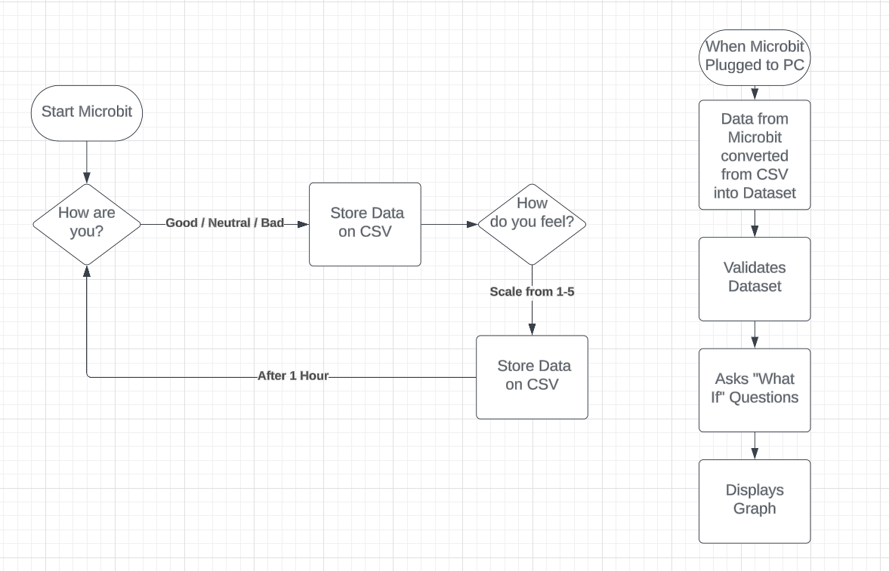

Plan And Design
Flowchart
Overview
The microbit is used to gather how the user is feeling, and how intensely they feel that emotion.
It will do this by asking the user two questions periodically every hour to get a dataset.
First, it will ask how they are currenlty feeling.
The user uses buttons A and B to select their emotion, pressing the microbit logo to choose it. The user chooses between 3 emotions; "happy", "neutral", "sad".
After, it will ask how intensity they feel that way.
Using buttons A and B again, they choose from a range between 1-5, pressing the microbit logo to choose it.
From these data gathered, it will then log and store them in a CSV file.
This CSV file will then be sent to the computer, and can be graphed to find the "general emotional state".
A python file will be used to graph this data.
The y-axis will be the emotion felt, whilst the x-axis will be the time for that emotion.
If the user is happy, the y-axis value will be positive. The higher the number, the more happy they feel
If the user is sad, the y-axis value will be negative. The lower the number, the more sad they feel.
If the user is neutral, the y-axis will be at 0.
The "general emotional state" will be the average of the emotions felt throughout the day.